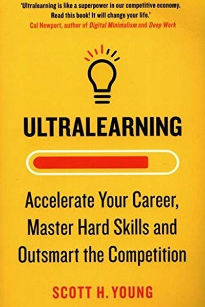

Library › Productivity
Ultralearning — Summary & Key Lessons

Master hard skills, outsmart the competition, and accelerate your career — with intense self-directed learning.
📖 OPEN THE FULL INTERACTIVE BREAKDOWN →🌐 Read it in Hindi, Hinglish, Gujarati, Tamil & 22 more languages — free, with audio.
💡 The Big Idea
Scott Young famously learned MIT's entire computer science curriculum in 12 months and four languages in a year. His method: ultralearning — intense, self-directed projects with aggressive learning strategies. The nine principles: metalearning (learn how to learn the subject), focus, directness (learn by doing the real thing), drill (attack weak points), retrieval (test yourself), feedback, retention (spaced repetition), intuition (dig deep), and experimentation. Anyone can run an ultralearning project — even 1-2 hours a day — and make dramatic progress in months.
🧠 The 8 Key Lessons
Lesson 1: Metalearning: Learn How to Learn First
Metalearning
Before learning a subject, spend 10% of your time learning how to learn it: why (motivation), what (concepts, facts, procedures), and how (resources, methods, practice). Draw a map of the subject — its structure, key skills, and where people usually struggle. The map prevents wasted effort.
📖 Example: Young mapped MIT's CS curriculum into a tree of prerequisites before starting — knowing which courses unlocked others saved him months. Young spent a month mapping his Mandarin learning before touching a single textbook: he researched the sounds, the… Read the full example →
⚡ Do this: Before your next skill project, spend one hour mapping it: concepts vs. facts vs. procedures, and the best resources.
Lesson 2: Directness: Learn by Doing the Real Thing
Directness
The fastest way to learn is to practice the actual skill you want: speak the language, write real code, make real presentations. Indirect learning (theory, textbooks, apps) transfers poorly. Attach your learning to a real project, real audience or real stakes.
📖 Example: Young learned Spanish by having conversations and watching content in Spanish rather than studying grammar — direct practice in the target context. Language learners who converse early progress far faster. Read the full example →
⚡ Do this: Identify the real activity your skill serves — then do that activity this week, even badly. Theory follows practice.
Lesson 3: Drill: Attack Your Weak Points
Drill
After direct practice, isolate the hardest parts and drill them: slow down, break the skill into components, and repeat the weak link. Drilling converts bottlenecks into automatic competence. The goal is to find the rate-limiting step and hammer it.
📖 Example: A programmer struggling with recursion drills only recursion problems for a week; a speaker records only their openings. Each attack on the weak point raises the whole skill. When learning to draw, Young identified that his weakest point was shading — so he… Read the full example →
⚡ Do this: Identify the one bottleneck in your skill. Design a 15-minute daily drill for exactly that part.
Lesson 4: Retrieval: Test Yourself, Don't Reread
Retrieval
The most powerful learning technique is retrieval: recalling information from memory instead of re-reading it. Every test, quiz or recall session strengthens memory far more than passive review. Close the book, write what you remember, check what you missed.
📖 Example: Young's MIT method: after every study session he closed the notes and reconstructed the ideas from memory. Research consistently shows retrieval beats re-reading by wide margins. After each chapter of the MIT course, Young closed the book and wrote… Read the full example →
⚡ Do this: After your next study session, close the material and write everything you remember. Then check and fill the gaps.
Lesson 5: Feedback: Get It Fast, Use It Smart
Feedback
Feedback is essential but not all feedback is equal: outcome feedback (you failed) is weakest; information feedback (here's what went wrong) is better; corrective feedback (here's how to fix it) is strongest. Seek the most corrective feedback available and use it immediately.
📖 Example: A designer who gets specific critique ('the contrast is too low here') improves faster than one who only hears 'this doesn't work'. Young sought public writing feedback that was specific enough to act on. Read the full example →
⚡ Do this: For your current skill, find a feedback source that tells you exactly what to fix — a mentor, a rubric, a code reviewer.
Lesson 6: Retention: Make It Stick
Retention
Learned skills decay without reinforcement. Fight forgetting with spaced repetition (review at expanding intervals), overlearning (keep practicing past mastery), and interleaving (mix topics). What you want to remember forever needs to be revisited — deliberately.
📖 Example: Young used spaced-repetition software for language vocabulary and MIT concepts, reviewing each item at growing intervals — turning short-term cramming into permanent knowledge. Young used spaced repetition software for vocabulary — reviewing words at… Read the full example →
⚡ Do this: Set up one spaced-repetition habit: a weekly review of last week's key ideas, or flashcards you revisit at expanding intervals.
Lesson 7: Intuition: Dig Deep, Don't Skim
Intuition
Real understanding requires digging past surface familiarity: ask why, derive the reasoning, and attack the feeling of 'I kind of get it'. Deep understanding (chunking) lets you see problems at a higher level. Fight the illusion of competence by probing for gaps.
📖 Example: Young's rule for math and CS: never move past a concept he couldn't explain from first principles. The students who dig into the 'why' outperform those who only memorize the 'how'. Read the full example →
⚡ Do this: Take one concept you 'kind of get' and force yourself to explain it from scratch, on paper, until it's airtight.
Lesson 8: Experimentation: Try Wildly Different Approaches
Experimentation
Once you have a basic method, experimentation accelerates you: change your resources, your environment, your techniques, your constraints. The experimental mindset turns plateaus into breakthroughs and keeps learning interesting. Variation is not distraction — it's search.
📖 Example: Young experimented with different language-learning methods — anki, immersion, tutors — until he found the mix that worked. Each experiment taught him something no course could. To learn Mandarin tones, he tried singing phrases, exaggerating the pitch with… Read the full example →
⚡ Do this: Change one variable in your learning this week: different time of day, different resource, different format — and compare results.
✅ 5-Step Action Plan
- Spend 10% of project time on metalearning — map the subject.
- Practice the real skill directly, from week one.
- Drill your single weakest point daily.
- Close the material and recall — test, don't reread.
- Get corrective feedback and act on it immediately.
⚠️ When This Doesn't Work
Young's 'learn aggressively, self-educate fast' is the best book on rapid skill acquisition ever — and Katerra is the warning that fast learning can outrun fast verification: the construction startup 'ultralearned' an entire industry in record time — hiring experts, absorbing knowledge, scaling faster than any builder in history — and collapsed with billions lost because the learning was about how to build, not how to build profitably. Ultralearning is a method for skills; it is not a method for truth. The caveat: learn fast, but verify the fundamentals at the same speed — the fastest learner in a broken model is just the fastest way to the bottom.
💀 The Graveyard Proves It
🏗️ Katerra — SoftBank's $2 Billion Construction 'Disruption'. Burn: $2B+ of SoftBank money. Read the full case study →
💬 Best Quotes from Ultralearning
- “Ultralearning is a strategy for aggressive, self-directed learning.”
- “Directness is the act of learning directly in the situation you want to perform in.”
- “Retrieval practice is the most powerful learning technique known.”
Interactive version: mark lessons as read, listen in your language, share quote cards.